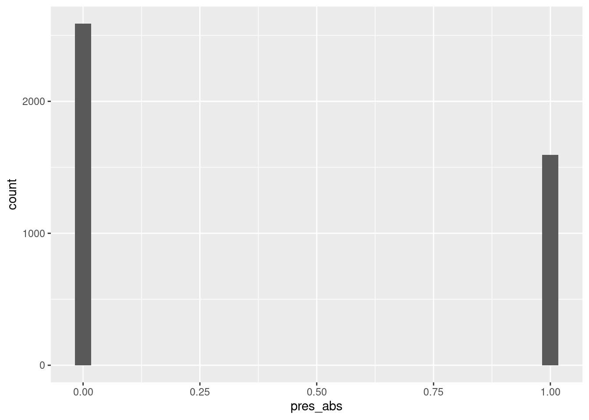

### Funktion um Packages direkt zu installieren und / oder zu laden
ipak <- function(pkg){
new.pkg <- pkg[!(pkg %in% installed.packages()[, "Package"])]
if (length(new.pkg))
install.packages(new.pkg, repos = "http://cran.us.r-project.org", dependencies = TRUE)
sapply(pkg, require, character.only = TRUE)
}
packages <- c("sp", "raster", "tidyverse", "PerformanceAnalytics", "pastecs", "lme4",
"bbmle", "MuMIn", "MASS", "magrittr")
ipak(packages)5. Variablenselektion Multivariate Modelle / Habitatselektionsmodell - Lösung
Libraries laden
Variablenselektion
-> Vorgehen analog Coppes et al.
Aufgabe 1
Mit dem folgenden Code kann eine simple Korrelationsmatrix aufgebaut werden.
DF_mod <- read_delim("datasets/fallstudie_n/Aufgabe4_Datensatz_Habitatnutzung_Modelle_20221031_moodle.csv",
delim = ";")
DF_mod_day <- DF_mod |>
filter(time_of_day == "day")
round(cor(DF_mod_day[,6:12], method = "kendall"),2) slope dist_road_all dist_road_only dist_build forest_prop us
slope 1.00 0.13 0.16 0.11 0.18 0.22
dist_road_all 0.13 1.00 0.84 0.02 -0.08 -0.06
dist_road_only 0.16 0.84 1.00 0.03 -0.08 -0.04
dist_build 0.11 0.02 0.03 1.00 0.42 0.12
forest_prop 0.18 -0.08 -0.08 0.42 1.00 0.31
us 0.22 -0.06 -0.04 0.12 0.31 1.00
os 0.34 -0.06 -0.04 0.22 0.53 0.42
os
slope 0.34
dist_road_all -0.06
dist_road_only -0.04
dist_build 0.22
forest_prop 0.53
us 0.42
os 1.00# hier kann die Schwelle für die Korrelation gesetzt werden, 0.7 ist liberal /
# 0.5 konservativ
cor <- round(cor(DF_mod_day[,6:12], method = "kendall"),2)
cor[abs(cor)<0.7] <-0
cor slope dist_road_all dist_road_only dist_build forest_prop us os
slope 1 0.00 0.00 0 0 0 0
dist_road_all 0 1.00 0.84 0 0 0 0
dist_road_only 0 0.84 1.00 0 0 0 0
dist_build 0 0.00 0.00 1 0 0 0
forest_prop 0 0.00 0.00 0 1 0 0
us 0 0.00 0.00 0 0 1 0
os 0 0.00 0.00 0 0 0 1Aufgabe 2
Selektion der Variablen in einem univariaten Model
Skalieren der Variablen, damit ihr Einfluss vergleichbar wird (Problem verschiedene Skalen der Variablen (bspw. Neigung in Grad, Distanz in Metern))
DF_mod_day %<>%
mutate(slope_scaled = scale(slope),
us_scaled = scale(us),
os_scaled = scale(os),
forest_prop_scaled = scale(forest_prop),
dist_road_all_scaled = scale(dist_road_all),
dist_road_only_scaled = scale(dist_road_only),
dist_build_scaled = scale(dist_build),
id = as.factor(id))Aufgabe 3
Ein erstes GLMM (Generalized Linear Mixed Effects Modell) aufbauen: Funktion und Modelformel
wichtige Seite auf der man viele Hilfestellungen zu GLMM’s finden kann.
# wir werden das package lme4 mit der Funktion glmer verwenden
# die Hilfe von glmer aufrufen: ?glmer
# glmer(formula, data = , family = binomial)
# 1) formula:
# Abhängige Variable ~ Erklärende Variable + Random Factor
# In unseren Modellen kontrollieren wir für individuelle Unterschiede bei den Rehen
# indem wir einen Random Factor definieren => (1 | id)
# 2) data:
# euer Datensatz
# 3) family:
# hier binomial
# warum binomial? Verteilung Daten der Abhängigen Variable Präsenz/Absenz
ggplot(DF_mod_day, aes(pres_abs)) + geom_histogram()
# --> Binäre Verteilung => Binomiale Verteilung mit n = 1
# und wie schaut die Verteilung der Daten der Abhängigen Variable Nutzungsintensität
# (nmb, werden wir in diesem Kurs aber nicht genauer anschauen) aus?Aufgabe 4
Mit der GLMM Formel bauen wir in einem ersten Schritt eine univariate Variablenselektion auf.
Als abhängige Variable verwenden wir in der ersten Phase die Präsenz/Absenz der Rehe in den Kreisen
# Die erklärende Variable in m1 ist die erste Variable der korrelierenden Beziehung
# Die erklärende Variable in m2 ist die zweite Variable der korrelierenden Beziehung
# Hier ein Beispiel: Tagmodell Distanz zu Strassen und Wegen versus Distanz zu Strassen
m1 <- glmer(pres_abs ~ dist_road_all_scaled + (1 | id), data = DF_mod_day,
family = binomial)
m2 <- glmer(pres_abs ~ dist_road_only_scaled + (1 | id), data = DF_mod_day,
family = binomial)
# mit dieser Funktion können die Modellergebnisse inspiziert werden
summary(m1)
# Mit dieser Funktion kann der Informationgehalt der beiden Modelle gegeneinander
# abgeschätzt werden
bbmle::AICtab(m1, m2)
# tieferer AIC -> besser (AIC = Akaike information criterion) -> als deltaAIC ausgewiesen
# besser == Distanz zu Strassen
# ==> dieses Vorgehen muss nun für alle korrelierten Variablen für jeden Teildatensatz
# (geringe Störung/starke Störung) durchgeführt werden, um nur noch nicht (R < 0.7)
# korrelierte Variablen in das Modell einfliessen zu lassen Aufgabe 5
Selektion der Variablen in einem multivariaten Model
Mit folgendem Code kann eine automatisierte Variablenselektion (dredge-Funktion) und ein Modelaveraging aufgebaut werden (siehe auch Stats-Skript von J.Dengler & Team)
# hier wird die Formel für die dredge-Funktion vorbereitet (die Variablen V1-V6
# sind jene welche nach der univariaten Variablenselektion noch übrig bleiben)
f <- pres_abs ~
slope_scaled +
us_scaled +
os_scaled +
forest_prop_scaled +
dist_road_only_scaled +
dist_build_scaled
# inn diesem Befehl kommt der Random-Factor (das Reh) hinzu und es wird eine Formel
# daraus gemacht
f_dredge <- paste(c(f, "+ (1 | id)"), collapse = " ") %>% as.formula()
# Das Modell mit dieser Formel ausführen
m <- glmer(f_dredge, data = DF_mod_day, family = binomial, na.action = "na.fail")
# Das Modell in die dredge-Funktion einfügen (siehe auch unbedingt ?dredge)
all_m <- dredge(m)
# Importance values der einzelnen Variablen (Gibt an, wie bedeutsam eine bestimmte
# Variable ist, wenn man viele verschiedene Modelle vergleicht (multimodel inference))
sw(all_m) dist_road_only_scaled forest_prop_scaled us_scaled
Sum of weights: 1.00 1.00 1.00
N containing models: 32 32 32
slope_scaled dist_build_scaled os_scaled
Sum of weights: 0.95 0.67 0.39
N containing models: 32 32 32 # Schlussendlich wird ein Modelaverage durchgeführt (Schwellenwert für das delta-AIC = 2)
avgmodel <- model.avg(all_m, rank="AICc", subset = delta < 2)
summary(avgmodel)
Call:
model.avg(object = get.models(object = all_m, subset = delta <
2), rank = "AICc")
Component model call:
glmer(formula = pres_abs ~ <3 unique rhs>, data = DF_mod_day, family =
binomial, na.action = na.fail)
Component models:
df logLik AICc delta weight
12356 7 -2337.01 4688.05 0.00 0.48
123456 8 -2336.48 4689.00 0.95 0.30
2356 6 -2338.78 4689.58 1.53 0.22
Term codes:
dist_build_scaled dist_road_only_scaled forest_prop_scaled
1 2 3
os_scaled slope_scaled us_scaled
4 5 6
Model-averaged coefficients:
(full average)
Estimate Std. Error Adjusted SE z value Pr(>|z|)
(Intercept) -0.49074 0.14774 0.14779 3.321 0.000898 ***
dist_build_scaled -0.07877 0.06433 0.06434 1.224 0.220854
dist_road_only_scaled 0.44281 0.04792 0.04793 9.239 < 2e-16 ***
forest_prop_scaled 0.83786 0.06487 0.06489 12.912 < 2e-16 ***
slope_scaled -0.13548 0.04973 0.04975 2.723 0.006463 **
us_scaled 0.40130 0.04101 0.04102 9.784 < 2e-16 ***
os_scaled 0.01926 0.04529 0.04530 0.425 0.670605
(conditional average)
Estimate Std. Error Adjusted SE z value Pr(>|z|)
(Intercept) -0.49074 0.14774 0.14779 3.321 0.000898 ***
dist_build_scaled -0.10139 0.05508 0.05510 1.840 0.065753 .
dist_road_only_scaled 0.44281 0.04792 0.04793 9.239 < 2e-16 ***
forest_prop_scaled 0.83786 0.06487 0.06489 12.912 < 2e-16 ***
slope_scaled -0.13548 0.04973 0.04975 2.723 0.006463 **
us_scaled 0.40130 0.04101 0.04102 9.784 < 2e-16 ***
os_scaled 0.06466 0.06284 0.06286 1.029 0.303635
---
Signif. codes: 0 '***' 0.001 '**' 0.01 '*' 0.05 '.' 0.1 ' ' 1# ==> für alle weiteren Datensätze muss der gleiche Prozess der Variablenselektion
# durchgespielt werden.